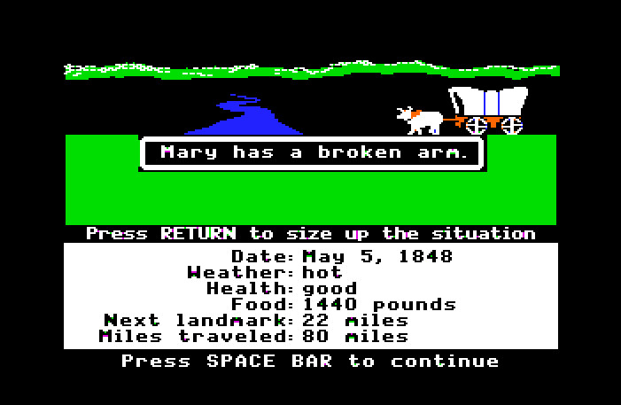

PHP for Drupal
PHP For Non-programmers
The voyage from PHP to CMS
Buckle-up Friends - it's time to go back to the wild west.
The voyage from PHP to CMS
PHP everywhere - its low barrier to entry
Very powerful as part of a LAMP solution
Custom PHP solutions made life better...
...well, more dynamic
...well, ok, we went crazy.
The voyage from PHP to CMS
PHProblems
Custom solutions created custom problems:
- expensive to maintain
- idiosyncratic
- security issues
The voyage from PHP to CMS
CMSalvation
Developers started to standardize solutions that were "user" focused
- Put content control in the hands of content experts
- Standardized code solutions
- Developed common libraries of code for reuse and extension
- Lean towards the separation of concerns.
Big Reveal: Drupal aint nothing but PHP
Drupal began as a CMS
So what does that mean for you?
- You can get started with the php you know.
- You can stand on the shoulders of giants.
- Small bits of code can do wonders.
- Feel mostly confident that your code will be secure and protected.
- It is not that hard™
PHP For Drupal
Making a Module and Theme
Module's .info File
Every module needs a .info file to alert Drupal that it exists. The .info file requires you have:
- Name of the module
- Description of the module
- Which version of Drupal the module is for
Module's .info File
What it looks like right now
name = My Very Own Module
description = A module for the 2012 BAD camp PHP training.
core = 7.x
Module's .info File
You can also include the following:
- Package (e.g. views)
- Dependencies
- Stylesheets
- Javascript files
- PHP Version
- Configuration page URL
Taken from: http://drupal.org/node/542202
Module's .info File
What it could look like
name = My Very Own Module
description = A module for the 2012 BAD camp PHP training.
core = 7.x
package = Four Kitchens
dependencies[] = views
php = 5.3
stylesheets[all][] = style.css
stylesheets[print][] = print.css
scripts[] = js/script.js
configure = admin/config/content/my_module
Drupal and PHP: A further primer
Let's take a look at:
- How the dang thing works
- Some things to remember for PHP in Drupal
How Does Drupal Work?
Imagine if you will....
The most incredible pet snail store still stranded in the 90s
Your pet snail - a snail mail tale
- You want an awesome snail so you fill out a mail order form for a snail, write a check and put it, put it in an envelope, and give it to the post man.
- The Postman gives the envelope to the mail sorter
- The mail sorter figures out which mail cart to put your envelope based on the address you indicated.
- So on and so forth - it is put on a truck, then a plane, then sorted for delivery, eventually winding up at the Snail Store where your order is fulfilled a snail is placed in a safe transportable home (a shell for his shell) and the process happens in reverse until... You get a snail by snail mail, thus ending the tale.
Further Imagining: What if?
- What if all of the various people performing these actions announced what they were doing and asked for changes?
- What if some of the people:
- Before they did anything said: "I am about to do this, any changes or actions you want to take?"
- While they were doing something "I am doing this, any changes or things you need to do"
- After they finished "Hey, i am done, anything you want to do now."
Further Imagining: What if?
- Finally - what if after your order was completed but before you got it:
- the snail's shell could be painted
- a different mollusk could be switched out with your snail
- somebody might call you and ask if you have permission to have this snail.
#Mindblown:
Drupal is very much like this bizarre story of invertebrate fulfillment
minus the snails
- You want an awesome snail so you fill out a mail order form for a snail, write a check and put it, put it in an envelope, and give it to the post man.
- You want to see a webpage so you type the address into the browser
- The Postman gives the envelope to the mail sorter
- Your browser and the internet direct your request to the webserver and to the site that happens to be in Drupal.
- The mail sorter figures out which mail cart to put your envelope based on the address you indicated.
- A special file on the site, the index.php file responds to the fact that a request has been made and asks where your request should be directed (hook_menu)
- So on and so forth - it is put on a truck, then a plane, then sorted for delivery, eventually winding up at the Snail Store where your order is fulfilled a snail is placed in a safe transportable home (a shell for his shell) and the process happens in reverse until... You get a snail by snail mail, thus ending the tale.
- Like the snail example, various events occur and various actors (php functions and libraries in this case) perform them which builds the page (fulfills your order) and sends a web page to your browser.
Further Imagining: What if?
- The what if scenarios that we discussed happen too-
- Each step of the way various pieces of php code listen to hear what events are taking place and may or may not take actions in response
- Those events could be checking to see if you have access, deciding what content goes on the page, building the menu for the page you are on
- This is true power of Drupal - and this power is called...
The Hook System
Vertical Slides
Slides can be nested inside of other slides, try pressing down.
Basement Level 1
Press down or up to navigate.
Basement Level 2
Cornify

Basement Level 3
That's it, time to go back up.
Holistic Overview
Press ESC to enter the slide overview!
rvl.io
If you don't like writing slides in HTML you can use the online editor rvl.io.
Works in Mobile Safari
Try it out! You can swipe through the slides pinch your way to the overview.
Marvelous Unordered List
- No order here
- Or here
- Or here
- Or here
Fantastic Ordered List
- One is smaller than...
- Two is smaller than...
- Three!
<section data-markdown>
## Markdown support
For those of you who like that sort of thing.
Instructions and a bit more info available [here](https://github.com/hakimel/reveal.js#markdown).
</section>
Transition Styles
You can select from different transitions, like:
Cube -
Page -
Concave -
Linear
Themes
Reveal.js comes with a few themes built in:
Sky -
Beige -
Simple -
Default
* Theme demos are loaded after the presentation which leads to flicker. In production you should load your theme in the <head> using a <link>.
Global State
Set data-state="something" on a slide and "something"
will be added as a class to the document element when the slide is open. This lets you
apply broader style changes, like switching the background.
"blackout"
"soothe"
Custom Events
Additionally custom events can be triggered on a per slide basis by binding to the data-state name.
Reveal.addEventListener( 'customevent', function() {
console.log( '"customevent" has fired' );
} );
Clever Quotes
These guys come in two forms, inline:
The nice thing about standards is that there are so many to choose from
and block:
For years there has been a theory that millions of monkeys typing at random on millions of typewriters would reproduce the entire works of Shakespeare. The Internet has proven this theory to be untrue.
Pretty Code
function linkify( selector ) {
if( supports3DTransforms ) {
var nodes = document.querySelectorAll( selector );
for( var i = 0, len = nodes.length; i < len; i++ ) {
var node = nodes[i];
if( !node.className ) ) {
node.className += ' roll';
}
};
}
}
Courtesy of highlight.js.
Intergalactic Interconnections
You can link between slides internally, like this.
Fragmented Views
Hit the next arrow...
... to step through ...
any type- of view
- fragments
Spectacular image!

Export to PDF
Presentations can be exported to PDF, below is an example that's been uploaded to SlideShare.